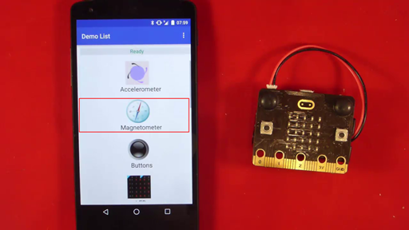

Bluetooth Magnetometer Service¶
Introduction¶
This Bluetooth Low Energy (BLE) service is an optional part of the standard bluetooth profile for the micro:bit. It is a passive service, that can operate transparently in the background as your main program is running. It provides live electronic compass / magnetometer data to a connected Bluetooth master device such as a smartphone. You do not need to explicitly address an API on the service to achieve this.
Enabling the Service¶
This service is disabled by default. To enable the service, simply create an instance of this class in your program, at any time after the uBit object has been initialised:
new MicroBitMagnetometerService(*uBit.ble, uBit.compass);
Note
Using Bluetooth services is memory hungry. By default, some of the memory normally used by Nordic's Bluetooth protocol stack (known as a SoftDevice), is reclaimed by the micro:bit runtime as general purpose memory for your applications. if you enable more Bluetooth services, then you may need to provide more memory back to Soft Device to ensure proper operation. If after enabling this service your Bluetooth application cannot access the service reliably, you should consider increasing the value of MICROBIT_SD_GATT_TABLE_SIZE in your inc/MicroBitConfig.h. The more service you add, the larger this will need to be, up to the limit defined in MicroBitConfig.h.
Bluetooth Service Specification¶
Please see the micro:bit Bluetooth profile specification.
Example Applications for Android/IOS/Android¶
General Procedures¶
micro:bit includes a magnetometer or "digital compass". The Bluetooth profile gives access to magnetometer data via the Magnetometer Service which includes 3 characteristics. Magnetometer Period controls the frequency with which magnetometer data is reported over Bluetooth. Magnetometer Bearing can deliver compass bearing measurements in degrees from North as Bluetooth notifications. Similarly, Magnetometer Data supports notifications and can deliver "raw" X, Y, Z values which describe the current bearing as a 3D vector.
- X is the magnetic field strength in the direction of magnetic north
- Y is the magnetic field strength in the direction of magnetic east i.e. 90 degrees from magnetic north
- Z is the magnetic field strength vertically down
From the X, Y and Z vector values it's possible to calculate the direction of magnetic north and its strength in micro-Teslas.
See the profile page and profile reference documentation for data format and UUID details.
Android¶

Android Bluetooth APIs¶
Android developers should make themselves familiar with the Android Bluetooth low energy APIs
microbit-ble-demo-android¶
The open source microbit-ble-demo-android application contains a demonstration of the micro:bit Bluetooth Magnetometer service. The main body of code for this demonstration can be found in ui.MagnetometerActivity.java except for the Bluetooth operations themselves which are in bluetooth.BleAdapterService which acts as a kind of higher level Bluetooth API for activities to use without needing to directly concern themselves too closely with the Android APIs themselves. In most cases, operations are asynchronous so that the activity code initiates a Bluetooth operation by calling one of the methods in bluetooth.BleAdapterService (e.g. readCharacteristic(....) ) and later receives a message containing the result of the operation from this object via a Handler object. The message is examined in the Handler code and acted upon.
Key parts of the magnetometer demonstration in this application are explained next.
In bluetooth.BleAdapterService¶
public static String MAGNETOMETERSERVICE_SERVICE_UUID = "E95DF2D8251D470AA062FA1922DFA9A8";
public static String MAGNETOMETERDATA_CHARACTERISTIC_UUID = "E95DFB11251D470AA062FA1922DFA9A8";
public static String MAGNETOMETERPERIOD_CHARACTERISTIC_UUID = "E95D386C251D470AA062FA1922DFA9A8";
public static String MAGNETOMETERBEARING_CHARACTERISTIC_UUID = "E95D9715251D470AA062FA1922DFA9A8";
In ui.MagnetometerActivity¶
// enabling notifications on the Magnetometer Bearing characteristic
bluetooth_le_adapter.setNotificationsState(
Utility.normaliseUUID(BleAdapterService.MAGNETOMETERSERVICE_SERVICE_UUID),
Utility.normaliseUUID(BleAdapterService.MAGNETOMETERBEARING_CHARACTERISTIC_UUID), true)
// enabling notifications on the Magnetometer Data characteristic
bluetooth_le_adapter.setNotificationsState(
Utility.normaliseUUID(BleAdapterService.MAGNETOMETERSERVICE_SERVICE_UUID),
Utility.normaliseUUID(BleAdapterService.MAGNETOMETERDATA_CHARACTERISTIC_UUID), true)
// handling notifications
case BleAdapterService.NOTIFICATION_RECEIVED:
bundle = msg.getData();
service_uuid = bundle.getString(BleAdapterService.PARCEL_SERVICE_UUID);
characteristic_uuid = bundle.getString(BleAdapterService.PARCEL_CHARACTERISTIC_UUID);
b = bundle.getByteArray(BleAdapterService.PARCEL_VALUE);
Log.d(Constants.TAG, "Value=" + Utility.byteArrayAsHexString(b));
if (characteristic_uuid.equalsIgnoreCase((Utility.normaliseUUID(BleAdapterService.MAGNETOMETERDATA_CHARACTERISTIC_UUID)))) {
byte[] x_bytes = new byte[2];
byte[] y_bytes = new byte[2];
byte[] z_bytes = new byte[2];
System.arraycopy(b, 0, x_bytes, 0, 2);
System.arraycopy(b, 2, y_bytes, 0, 2);
System.arraycopy(b, 4, z_bytes, 0, 2);
short raw_x = Utility.shortFromLittleEndianBytes(x_bytes);
short raw_y = Utility.shortFromLittleEndianBytes(y_bytes);
short raw_z = Utility.shortFromLittleEndianBytes(z_bytes);
Log.d(Constants.TAG, "Magnetometer Data received: x=" + raw_x + " y=" + raw_y + " z=" + raw_z);
float magnet_x = raw_x / 1000f;
float magnet_y = raw_y / 1000f;
float magnet_z = raw_z / 1000f;
Log.d(Constants.TAG, "magnetometer data converted: x=" + magnet_x + " y=" + magnet_y + " z=" + magnet_z);
magnet_input[0] = magnet_x;
magnet_input[1] = magnet_y;
magnet_input[2] = magnet_z;
magnet_output = Utility.lowPass(magnet_input, magnet_output);
Log.d(Constants.TAG, "Smoothed magnetometer data: x=" + magnet_output[0] + " y=" + magnet_output[1] + " z=" + magnet_output[2]);
((TextView) MagnetometerActivity.this.findViewById(R.id.magnet_x)).setText("X: " + String.format("%.3f", magnet_output[0]));
((TextView) MagnetometerActivity.this.findViewById(R.id.magnet_y)).setText("Y: " + String.format("%.3f", magnet_output[1]));
((TextView) MagnetometerActivity.this.findViewById(R.id.magnet_z)).setText("Z: " + String.format("%.3f", magnet_output[2]));
} else {
if (characteristic_uuid.equalsIgnoreCase((Utility.normaliseUUID(BleAdapterService.MAGNETOMETERBEARING_CHARACTERISTIC_UUID)))) {
byte[] bearing_bytes = new byte[2];
System.arraycopy(b, 0, bearing_bytes, 0, 2);
short bearing = Utility.shortFromLittleEndianBytes(bearing_bytes);
Log.d(Constants.TAG, "Magnetometer Bearing received: " + bearing);
((TextView) MagnetometerActivity.this.findViewById(R.id.bearing)).setText(bearing + " degrees");
current_bearing = bearing;
String point_name = compassPoint(current_bearing);
Log.d(Constants.TAG, "Point Name: " + point_name);
((TextView) MagnetometerActivity.this.findViewById(R.id.compass_point)).setText(point_name);
}
}
break;